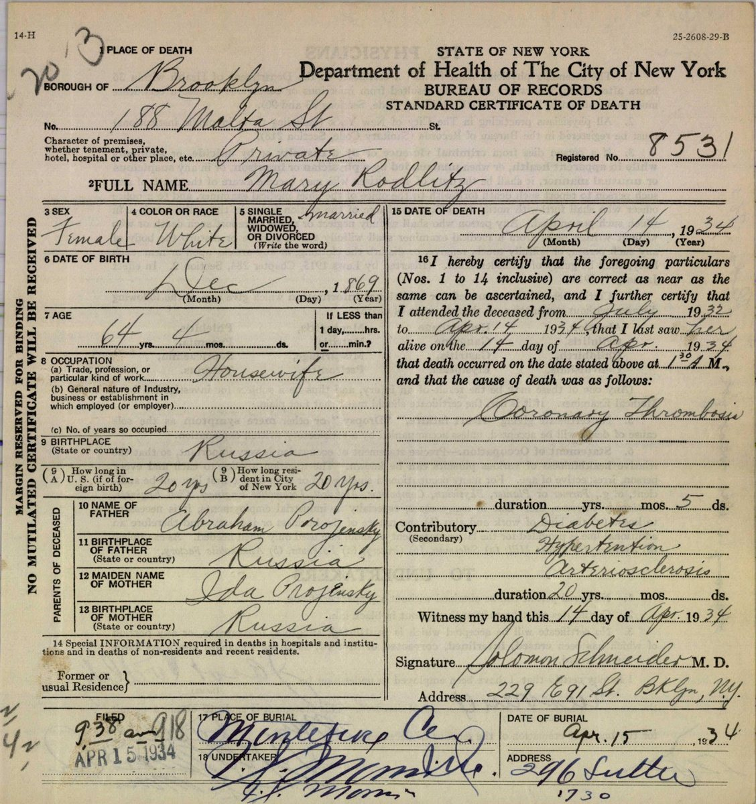

The Rodilitzes of Kobrin district
Jacob, a Hebrew teacher from Kovel, Mary from Divin, and their eight children, who crossed one at a time, 1907–1913.
In this chapter
Jacob and Mary
Jacob Rodilitz (Yiddish Jankel; in his own papers Rodeletz) was born on 15 March 1871 in Kovel, Volhynia. When he applied to become an American citizen he described himself as a Hebrew teacher.1 His wife Mary, called Miriam and Mariam in the records, was born on 25 December 1869. Her maiden name is written Prozansky, Pruzansky and Porojinsky, and her parents were Abraham and Ida; the 1913 passenger list gives her birthplace as Kobryn.2 Their gravestone gives the next generation back: Jacob was Yaakov son of Yonah, and Mary was Miriam Reizel daughter of Avraham.3
Jacob’s 1927 naturalization petition names their eight children with their dates of birth. Their birthplaces come from their own later records:
| Child | Yiddish name | Born | Birthplace as recorded |
|---|---|---|---|
| Morris | Motel | 17 April 1890 | Czerniany; “Grodno” |
| Harry | Hersch | 20 August 1892 | Maczew |
| Meyer | Meier | 5 March 1894 | Kobrin |
| Benny (Benjamin) | Berl | 28 April 1896 | Kobrin |
| Ida | Chaje | 19 January 1898 | “Grodno”; Kobryn |
| Esther | Ester | 4 March 1900 | Brest; Kobryn |
| Louis | Leib | 14 August 1905 | “Grodno”; Kobryn |
| Sarah | Sure | 6 February 1907 | Kobrin |
Some of these dates disagree with ages on other records: Esther’s age on her 1913 passenger list points to about 1903, and Ida’s and Esther’s marriage certificates make them younger than the petition does.
The family seems to have lived in or moved between two areas about 80–115 km apart. Jacob in 1907 and Harry in 1910 gave their home as Maczew or Maciow, probably Maciejów (now Lukiv), a small town 27 km west of Kovel. Everyone else gave places in the Kobrin–Brest area of Grodno province: Czerniany, Kobrin, Brest and Divin. Divin stands on the road from Kobrin to Kovel, roughly between the two areas (map 1a).
Mary’s other names. Two sons’ passenger lists give their mother as Resel (Harry, 1910) and R. (Meyer, 1911), and Ida’s and Esther’s marriage certificates give her maiden name as Rosen. Her gravestone explains the first two: her full name was Miriam Reizel, and Reizel (Rose) was the name the family used, for the plot her children later bought is named for “Jacob & Miriam Rose.” Rosen on the marriage certificates is probably a clerk’s mishearing of the same name.
One at a time: the crossings, 1907–1913
Jacob went first. The Holland-America Line’s register of passage money records “Jankel Rudoles” sailing from Rotterdam on the Rijndam on 27 April 1907, and the ship reached New York on 7 May; Jacob later swore that he arrived on 9 May 1907 on the Ryndam. The Ellis Island list for that voyage has a “Jankel Rudales,” 33, married, from Mariow or Maciow, whose passage was paid by his brother-in-law, going to that brother-in-law, “B. Rozankrans,” at 70 Orchard Street on Manhattan’s Lower East Side. The ship, the date and his home town fit Jacob; his age (33 rather than 36), his occupation (“miller,” perhaps a misreading of melamed) and his height do not, so this line is probably, but not certainly, his (about 70%). B. Rozankrans has not been identified: he was not living at 70 Orchard Street in 1905 or 1910.4
The sons followed, one by one, each going to their father in Brooklyn:
| Who | Ship and port | Arrived | Details from the passenger list |
|---|---|---|---|
| Morris (Motel), 18 | Breslau, from Bremen | 16 December 1907 | From Czerniany; mother Mariem there; passage paid by his father; $2; to father Jankel, 326 Snediker Ave |
| Harry (Hersch), 18 | Cleveland, from Hamburg | 12 June 1910 | Locksmith, from Maczew; mother “Resel”; to his father at 326 Snediker Ave |
| Meyer (Meier), 18 | Rotterdam, from Rotterdam (sailed 22 July) | 31 July 1911 | From Kobrin; passage paid by his father; to father at 721 Vienna Ave |
| Benny (Berl), 17 | Potsdam, from Rotterdam (sailed 22 June) | 2–3 July 1912 | From Kobrin; mother Marya; passage paid by his father; held as a possible public charge (“underdeveloped for 17”); admitted 5 July |
| Mary, 47, with Chaje (Ida) 16, Ester 10, Leib (Louis) 9 and Sure (Sarah) 7 | Pretoria, from Hamburg | 22 December 1913 | From Dwin (Divin); all born Kobryn; an uncle, Joel M., left behind in Dwin; to her husband at 721 Vienna Ave |
The Holland-America registers show that Jacob’s, Meyer’s and Benny’s tickets were all booked through the line’s own office in New York and entered as prepaid, and Meyer’s and Benny’s passenger lists say their passage was paid by their father. So Jacob bought his sons’ tickets in America and sent them to Europe. His own ticket, too, was bought in New York, apparently by the brother-in-law he went to join.5 Mary stayed in Europe with the four youngest for six and a half years, a long separation but not an unusual one; by 1913 they were living in Divin. She arrived eight months before the First World War closed the routes.
Brooklyn
The family settled in East New York, Brooklyn, beside Brownsville, where garment work and new transit lines had drawn tens of thousands of Jewish families out of the Lower East Side. Their addresses follow the family’s growth: 326 Snediker Avenue (1907–10), 721 Vienna Avenue (1911–13), 115 Malta Street (1915), and from about 1919 188 Malta Street, which stayed the family home into the 1930s. In June 1915, eighteen months after Mary’s arrival, the New York state census found all ten together at 115 Malta Street.6
Six of the other children’s marriages have been found, and all six gave 188 Malta Street as their home: Harry married Fannie Bunder in 1919, Ida married Irving Hovelin and Esther Sol Feinberg in 1927, Sarah married Martin Gordon in 1929, Meyer married Henrietta Frankel in 1932, and Louis married Gertrude Kaplan in 1934. Every wedding but Meyer’s was held at, or by the rabbi of, the synagogue at 41 Malta Street, where Morris had married in 1915. Meyer was in Europe at the end of the First World War; he returned to New York in November 1919, giving his father at 188 Malta Street as his nearest relative.7


Jacob declared his intention to become a citizen in 1924 and was naturalized in February 1929. Mary died at 188 Malta Street on 14 April 1934, aged 64, and was buried the next day at Montefiore Cemetery in Queens. Her death certificate gives her parents as Abraham Porojinsky and Ida Projinsky and her time in America as twenty years.2 Jacob died on 14 or 15 June 1950, aged 79 by his papers (82 on his stone), and was buried beside her, in the plot of the Agudath Achim Anshe New Lots congregation, a local synagogue of East New York.8
Yonah and Avraham
The Hebrew inscriptions on Jacob and Mary’s shared stone, headed RODELETZ and “Beloved Mother and Father,” are the oldest family names yet found on this side:
| Stone | Hebrew inscription | Translation | Died |
|---|---|---|---|
| Jacob | יעקב בן ר׳ יונה | Yaakov son of R. Yonah | 1st day of Rosh Chodesh Tammuz 5710 (15 June 1950) |
| Mary | מרים רייזל בת ר׳ אברהם | Miriam Reizel daughter of R. Avraham | 29 Nisan 5694 (14 April 1934) |
So Jacob’s father was Yonah (Jonah), and Mary’s father Abraham, named on her death certificate, is confirmed. A grandson confirms both. Harry’s first son, born on 21 May 1920, was Abraham Jonas Rodolitz; his own stone reads Avraham Yonah son of R. Tzvi Hersh. He was named after both of Harry’s grandfathers. Ashkenazi Jews name children only after relatives who have died, so both Abraham Prozansky and Yonah Rodilitz had probably died, in Europe, by 1920.9
Mary’s brother, Moishe Velvel
In August 1909 an 18-year-old shoemaker named Moische Wolf Prozanski landed at Ellis Island from Antwerp on the Kroonland. He came from “Du…,” almost certainly Divin, and the relative he left behind was his “sister Marina Rodelitz,” of Divin. This is Mary, four years before she left, and it confirms both her maiden name and her home in Divin.10
He settled in Chicago, where he used the name Morris William Rosen. He enlisted in the US Army at Jefferson Barracks, Missouri, in October 1915, served in the Quartermaster Corps until a medical discharge in April 1918, and was naturalized in Chicago in December 1921 as “Moishe Velval (Morris William) Prozansky (Rosen),” born 5 March 1892. In 1928 he entered the veterans’ home at Sawtelle, Los Angeles; asked for his nearest relative, he gave “Sister, Mary Rodeletz, address unknown, New York.” He stayed in Los Angeles, working in the clothing trade, and probably died there in March 1982, aged 89; he is buried at Young Israel Cemetery, Norwalk, under a stone reading “Morris W. Rosen 1892–1982.” No wife or children have been found.10
Moishe Velvel was 22 years younger than Mary. He may have been a late child of Abraham and Ida, or a half-brother from a second marriage of Abraham’s; the records do not yet say. His veteran’s file, which the Department of Veterans Affairs still holds, should name his parents.
Notes
-
Declaration of intention no. 70718, Jacob Rodeletz, 13 June 1924, and petition no. 82022, 16 September 1927, US District Court, Eastern District of New York; certificate no. 2898975, February 1929 (RZ-S37 to RZ-S39). The petition lists the eight children with their birth dates. ↩
-
Certificate of death no. 8531, Mary Rodlitz, Brooklyn, 14 April 1934, NYC Municipal Archives D-K-1934-0008531 (RZ-S02), a860-historicalvitalrecords.nyc.gov/view/6285818. Birth date 25 December 1869: Jacob’s petition (RZ-S38). Birthplace Kobryn: passenger list, SS Pretoria, 1913 (RZ-S61). ↩↩
-
Gravestone of Jacob and Miriam Rodeletz, Montefiore Cemetery, Queens, Find a Grave memorial 148960962, photograph 2019 (RZ-S91). ↩
-
Holland-America Line, register of passage money, Rotterdam–New York, April 1907, Stadsarchief Rotterdam 318-04 inv. 834, folio 241, line 16 (RZ-S73), hdl.handle.net/21.12133/C1C6D3A8986D438E899813B630779FFC; Ellis Island passenger list, SS Ryndam, arrived 7 May 1907 (stamped 9 May), list 35, line 29, NARA T715 roll 888 (RZ-S63), statueofliberty.org arrival record JXNX-J43. Jacob’s sworn date: petition (RZ-S38). 70 Orchard Street: 1905 New York State census (A.D. 8, E.D. 8) and 1910 US census (Manhattan, ED 215). ↩
-
Holland-America registers, inv. 834, 875 and 886 (RZ-S73 to RZ-S75); passenger lists of Meyer, SS Rotterdam, 31 July 1911 (RZ-S40), and Benny, SS Potsdam, July 1912 (RZ-S41). ↩
-
New York State census, 1915, Kings, A.D. 22, E.D. 51, p. 191 (RZ-S53); US census, 1920, 188 Malta St (RZ-S54); New York State census, 1925 (RZ-S55, RZ-S56). Passenger lists RZ-S36, RZ-S40 to RZ-S42 and RZ-S61 for the earlier addresses. On Brownsville: Brooklyn Jewish Historical Initiative, “Living in Brooklyn: the Jewish experience.” ↩
-
NYC marriage certificates: Harry Radolitz and Fannie Bunder, 1919 (M-K-1919-0001350); Irving Hovelin and Ida Rodlitz, 1927 (M-K-1927-0008948); Sol Feinberg and Esther Rodletz, 1927 (M-K-1927-0009704); Martin Gordon and Sarah Rodlitz, 1929 (M-K-1929-0009870); Meyer Rodlitz and Henrietta Frankel, 1932 (M-K-1932-0011831); Louis Rodolitz and Gertrude Kaplan, 1934 (M-K-1934-0010000) (RZ-S13 to RZ-S18). Meyer’s return: SS Royal George, arrived 8 November 1919 (RZ-S20). ↩
-
Montefiore Cemetery interment search: Jacob Rodeletz, died 14 June 1950, age 81, Block 11, row 7L, grave 2, beside Mary in grave 1; society Chevra Agudath Achim Anshe New Lots (RZ-S83); gravestone (RZ-S91), “died June 15, 1950, age 82 years,” the Hebrew date being 30 Sivan 5710. The death certificate has not yet been ordered. ↩
-
Gravestone of Abraham J. Rodolitz, 21 May 1920 – 20 January 1998, New Montefiore Cemetery, Find a Grave memorial 139203149 (RZ-S92); Harry’s petition for naturalization, 1920, for his son’s birth date (RZ-S84). ↩
-
Ellis Island passenger list, SS Kroonland from Antwerp, arrived 3 August 1909, line 13, NARA T715 roll 1311, p. 177 (RZ-S85), familysearch.org/ark:/61903/1:1:QGGG-1NNG; Soundex index card, naturalization, Superior Court, Cook County, 14 December 1921, NARA M1285 (RZ-S86), familysearch.org/ark:/61903/1:1:XKGP-Q6B; register of the Pacific Branch, National Home for Disabled Volunteer Soldiers, no. 29829, NARA M1749 (RZ-S87), familysearch.org/ark:/61903/1:1:V8M9-RCR; US censuses 1930–1950; WWII draft registration, 1942 (RZ-S89); California Death Index, “Morris Rosin,” 9 March 1982, and Find a Grave memorial 19521244 (RZ-S90). The identification of the 1942–1982 records is probable (about 80%). ↩↩